Bending Assumptions: Model II and Quantile Regression
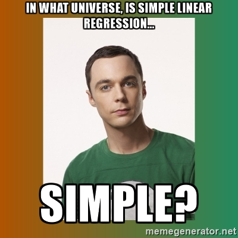
Sometimes Things seem OK: Cabezon Spawning Data
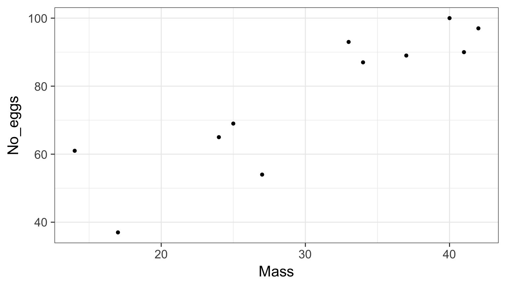
But - Those Residuals are Wide
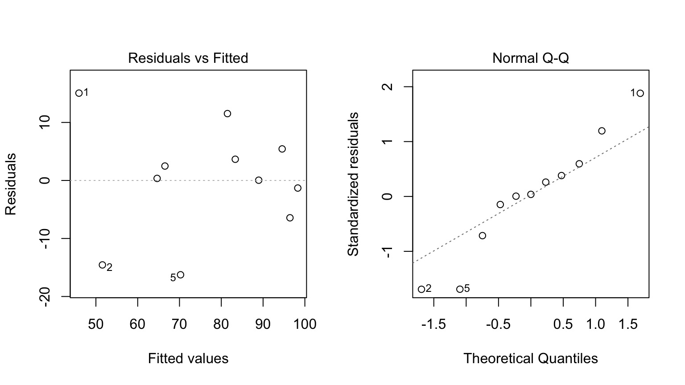
What if I told you there is Error in the Mass measurements, too?
Food Expenditure by Income in Belgium
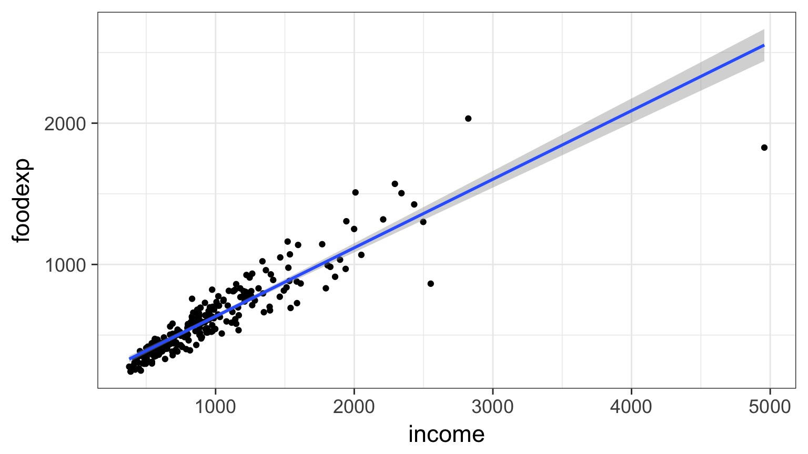
A Robust Outline
- Model II regression
- Quantile Regression
Thursday:
- Robust Regression
- Generalized Least Squares
Assumption: Error Only in Y
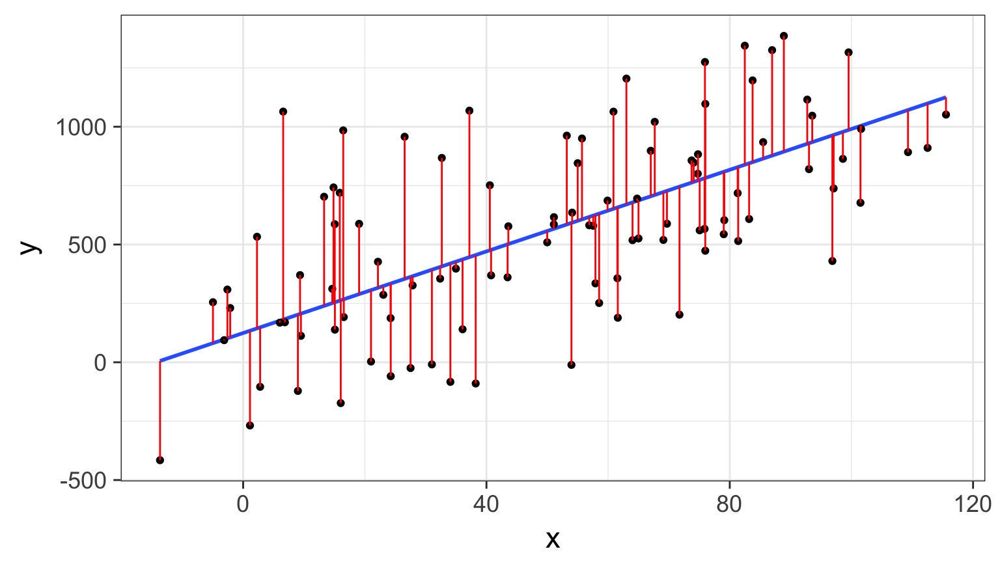
But What if There is Error in X?
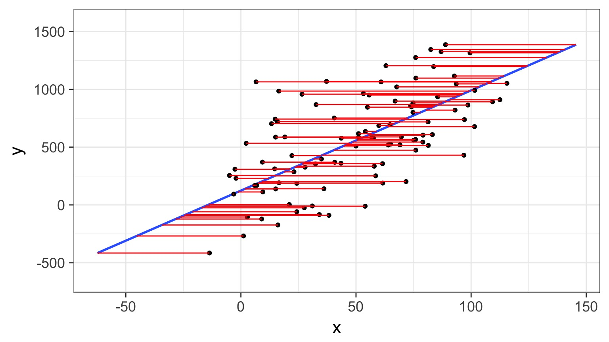
Can have big biasing effect on slope estimates
Really, Error in Both
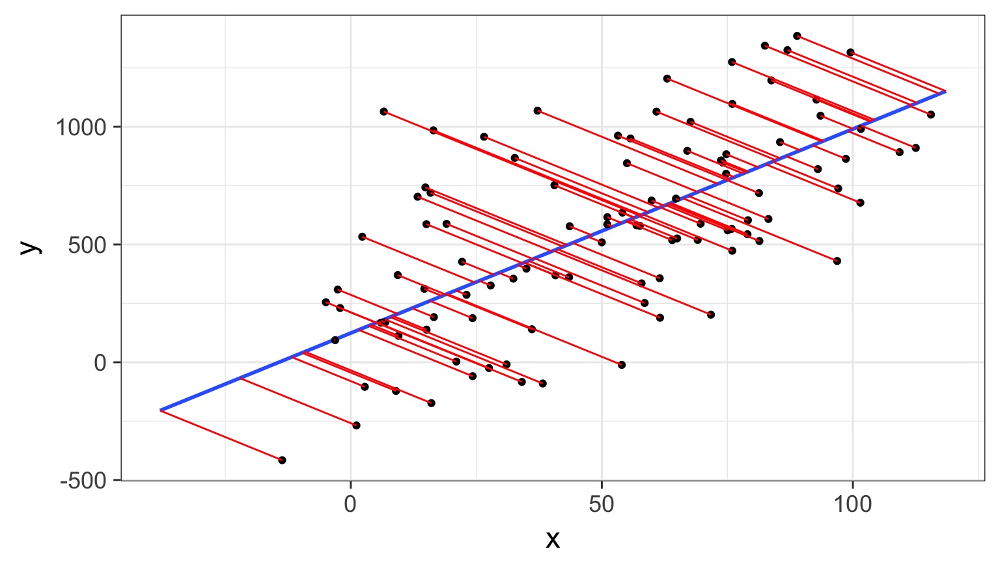
Really, Error in Both
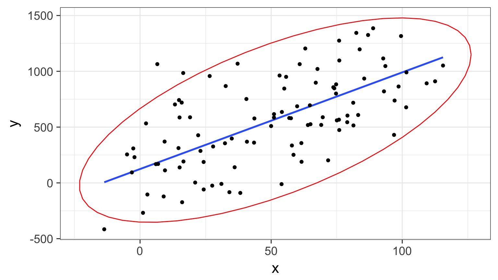
Model II Regression
- Estimates best line(s) describing relationship between X and Y with Error In Variables
- Assumes bivariate normal relationship
- Not for prediction (use OLS)
- But can compare slopes, intercepts between groups
Model II Regression: When?
- Uncertainty in X and Natural Error
- Common in Allometry
- Common in Power Law estimation
- But who doesn’t have that misbehaving scale…
Major Axis Regression
- Minimizes sums of squares beetween line and points
- “Residuals” are perpendicular to fit line
- Variables should be on same scale
Standardized/Reduced Major Axis Regression
- Minimizes are of triangles with points as right-angle corner
- Variables need not be same scale
- So, think of it as doing an MA on rescaled variables
When to use what
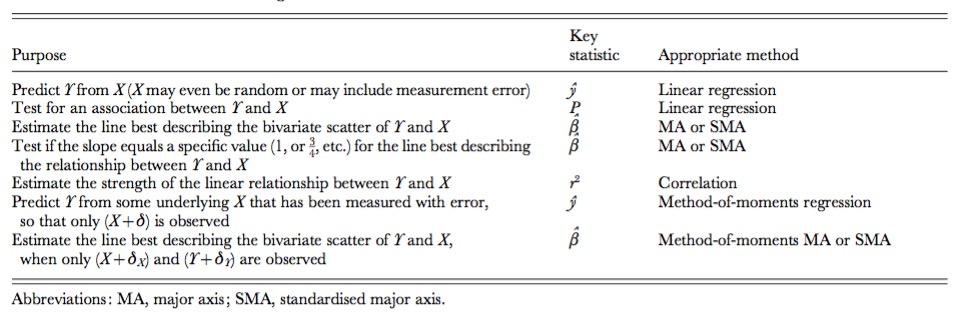
Wharton et al. 2006
SMA v. MA
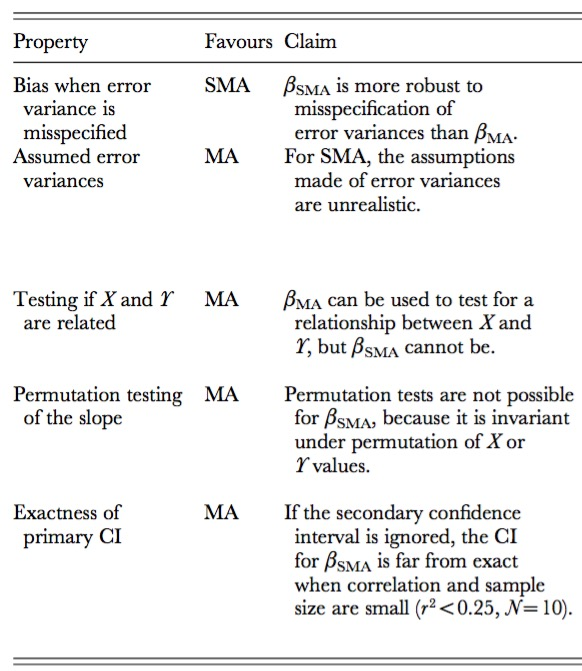
Wharton et al. 2006
Fit with smatr
library(smatr)
cab_sma <- sma(No_eggs ~ Mass, data=eggs)
Additional arguments:
method: SMA, MA, or OLS
type: for compring groups
robust: if outliers present
multcomp: TRUE to test multiple groups
Warton et al. 2012
Fit with smartr
Call: sma(formula = No_eggs ~ Mass, data = eggs)
Fit using Standardized Major Axis
------------------------------------------------------------
Coefficients:
elevation slope
estimate 12.19378 2.119366
lower limit -11.73415 1.496721
upper limit 36.12172 3.001037
H0 : variables uncorrelated
R-squared : 0.7784851
P-value : 0.00032417
Checking Assumptions
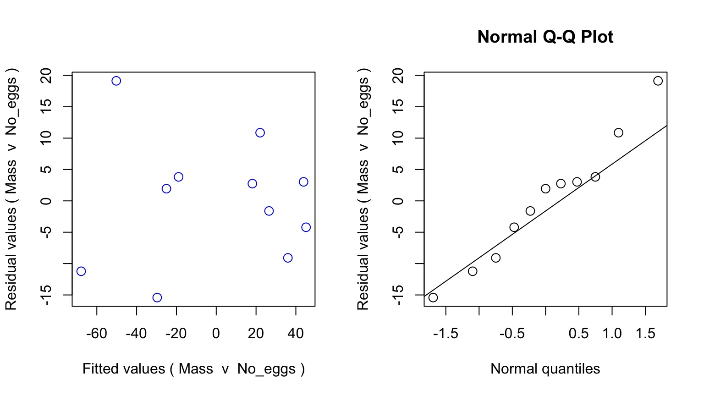
QQ Much Better Behaved
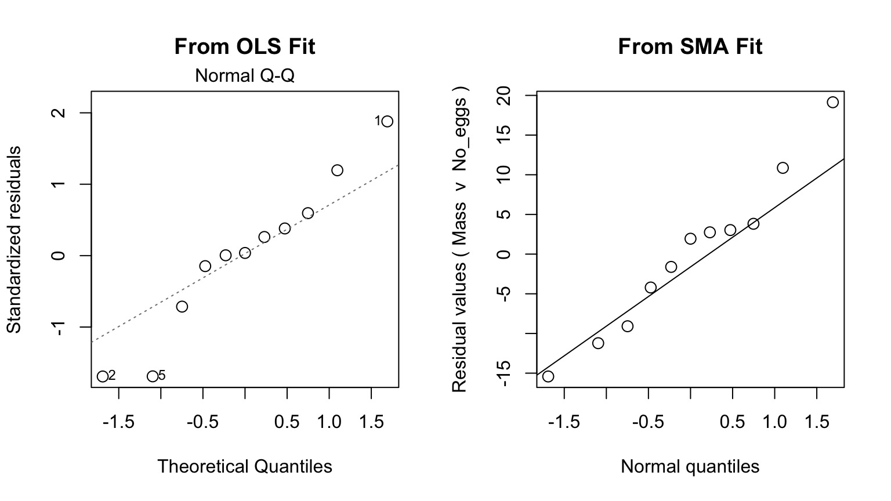
A Robust Outline
- Model II regression
- Quantile Regression
Thursday:
- Robust Regression
- Generalized Least Squares
Food Expenditure by Income in Belgium
Regression Through the Mean
- Traditionally, we fit a regression through a mean
- \(\hat{y_i} = \beta x_i\) implies the mean value of y at x
- We can fit through other parts of the distribution
Regression Through a Quantile
- We can fit through other quantiles
- This is the 0.9 quantile
- 90% of the values of y are under the line given X
- This is an optimization problem where residuals are weighted to estimate coefficients
Regression Through Quantiles
Red: 0.1, 0.5, and 0.9 quantile
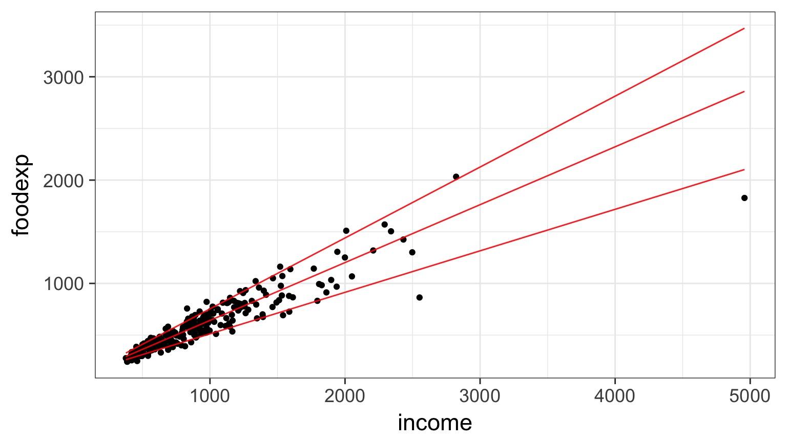
Regression Through Quantiles
Red: 0.1, 0.5, and 0.9 quantile, Blue: OLS Fit
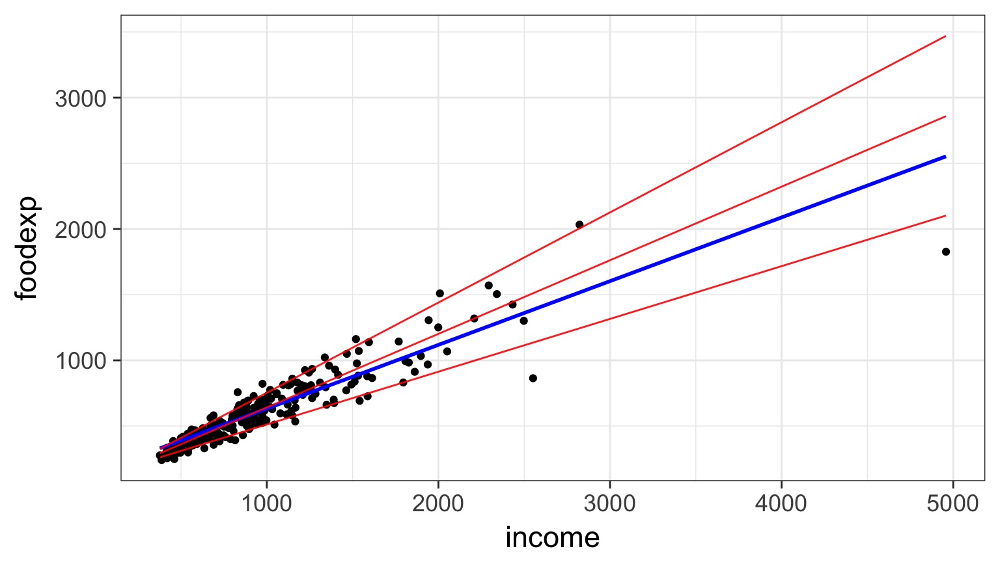
Quantile Regression and Kiddos
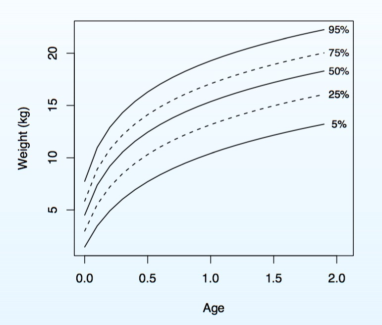
Application Very Flexible
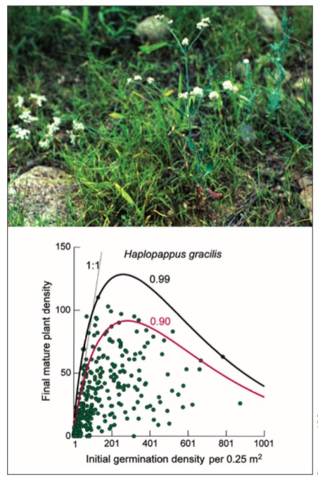
Even GLMs are fitting through central tendancy - quantile approaches available
Why Quantile Regression?
- Unequal Variation (the trumpet) implies underlying unmeasured drivers & interactions
- Allows us to see how a relationship varies within a population with no additional covariates
- Allows us to look at constraints on a population
- See Cade and Noon 2003
Why Quantile Regression?
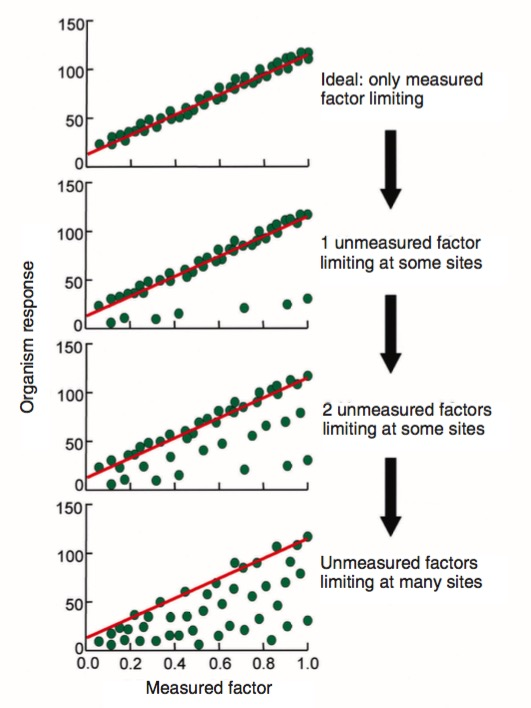
Quantile Regression with Quantreg
Tau = quantiles
library(quantreg)
data(engel)
engel_rq <- rq(foodexp ~ income, data=engel,
tau = c(0.2, 0.5, 0.8))
Quantile Regression with Quantreg
Call: rq(formula = foodexp ~ income, tau = c(0.2, 0.5, 0.8), data = engel)
tau: [1] 0.2
Coefficients:
coefficients lower bd upper bd
(Intercept) 102.31388 65.20699 129.07170
income 0.44690 0.40492 0.49542
Call: rq(formula = foodexp ~ income, tau = c(0.2, 0.5, 0.8), data = engel)
tau: [1] 0.5
Coefficients:
coefficients lower bd upper bd
(Intercept) 81.48225 53.25915 114.01156
income 0.56018 0.48702 0.60199
Call: rq(formula = foodexp ~ income, tau = c(0.2, 0.5, 0.8), data = engel)
tau: [1] 0.8
Coefficients:
coefficients lower bd upper bd
(Intercept) 58.00666 23.44539 97.44950
income 0.65951 0.59454 0.70049
Broom Summary
term estimate conf.low conf.high tau
1 (Intercept) 102.3138823 60.8322719 136.0809160 0.2
2 income 0.4468995 0.3746126 0.4958588 0.2
3 (Intercept) 81.4822474 47.0904023 135.1883939 0.5
4 income 0.5601806 0.4803301 0.6127786 0.5
5 (Intercept) 58.0066635 18.2035033 111.9660198 0.8
6 income 0.6595106 0.5939093 0.7153737 0.8
Plotting Lines
engel_plot <- ggplot(data=engel, aes(x=income, y=foodexp)) +
geom_point() +
theme_bw(base_size=17)
#STAT_QUANTILE
engel_plot +
stat_quantile(quantiles=c(0.2, 0.5, 0.8))
Plotting Coefficients
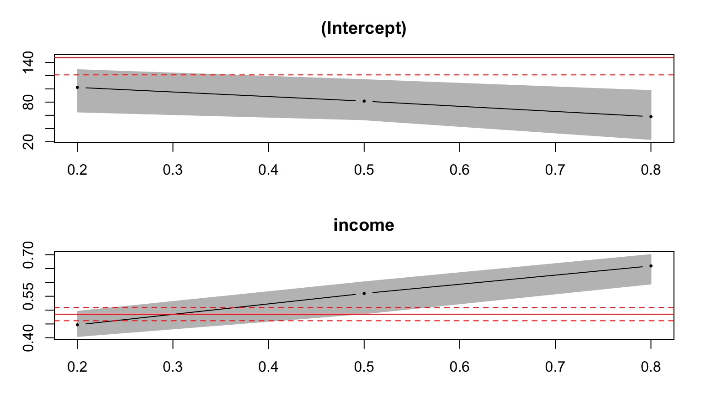
Lots of Coefficients
plot(summary(rq(foodexp ~ income, data=engel,
tau = seq(0.05,0.95,.05))))
Are the Coefficients Equal?
- We might want to know if there are differences between quantiles of the population.
- F-Test
Quantile Regression Analysis of Deviance Table
Model: foodexp ~ income
Joint Test of Equality of Slopes: tau in { 0.2 0.5 0.8 }
Df Resid Df F value Pr(>F)
1 2 703 21.003 1.382e-09 ***
---
Signif. codes: 0 '***' 0.001 '**' 0.01 '*' 0.05 '.' 0.1 ' ' 1
Example Data for Today
- ekk_from_dryad.csv from Brennan A, Cross PC, Creel S (2015) Managing more than the mean: using quantile regression to identify factors related to large elk groups. Journal of Applied Ecology
- What if some of the population abundances have been measured with error? E.g. Wolves v. Elk population size?
- Where does Quantile regression come in handy in asking what determines elk herd abundance?